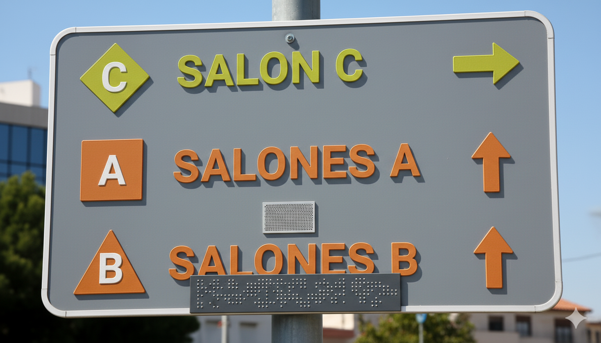

Acerca del Proyecto: Rediseño de Señales UMNG
Este proyecto se centra en el **rediseño de las señales viales** del recorrido dentro de la Universidad Militar Nueva Granada (UMNG), específicamente desde la entrada principal hasta el Bloque de Salones B. Nuestro objetivo es crear un sistema de orientación más **inclusivo, intuitivo y estético**.
1. Inclusión con Braille y Audio-Guía
Todas las señales incluyen texto en **Braille** y un sistema de **Audio-Guía** (mediante códigos QR o NFC) para asistir a personas con discapacidad visual, asegurando una navegación autónoma y segura.
2. Sistema de Colores de Proximidad (Caliente/Frío)
Implementamos un sistema de colores para indicar la proximidad a tu destino (en este caso al Bloque B). El color de las señales cambia gradualmente, siguiendo la lógica "Caliente-Frío":
3. Figuras Geométricas Únicas por Edificio
Cada edificio importante cuenta con un símbolo geométrico único (ej: **TRIÁNGULO** para el Bloque B). Estos símbolos, junto a la letra del bloque y texto en **Braille**, están discretamente ubicados en las paredes para ofrecer una referencia visual no invasiva pero altamente útil para la orientación.
Esta es una muestra de uno de nuestros carteles:
Recorre nuestro rediseño justo aquí :)
Si el visor 3D no carga, puedes acceder al modelo directamente en Sketchfab aquí.